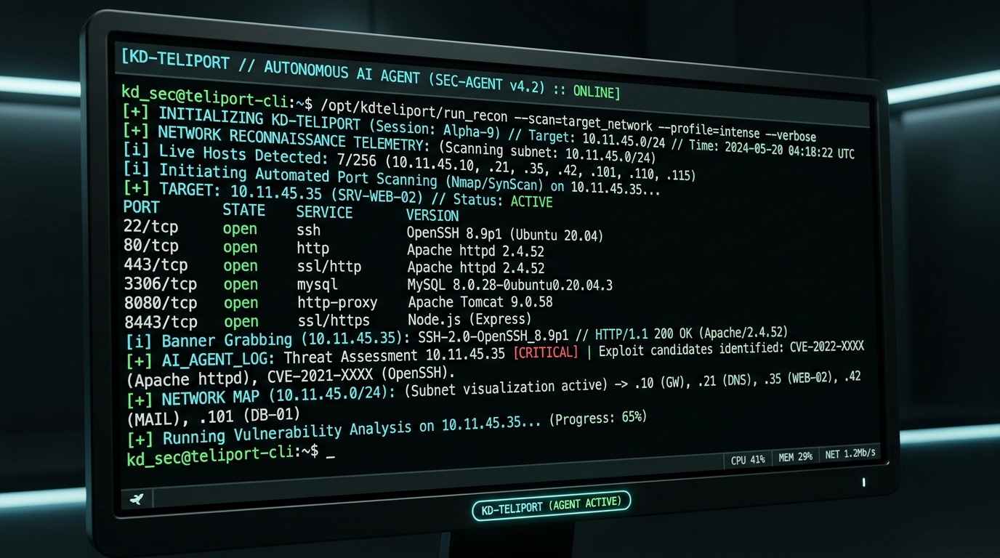
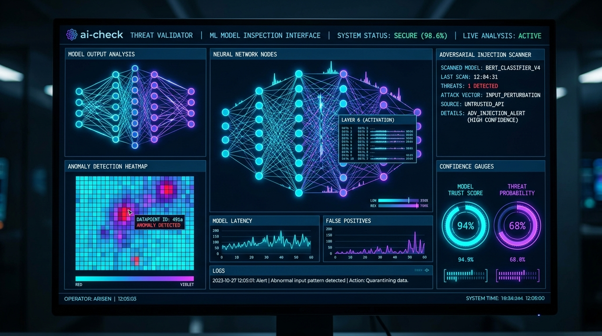

CORE DEFENSE™
- JUNIOR PENTESTER
- SOC / THREAT ANALYST
- ML DEFENSE RESEARCHER
- ANDROID SECURITY AUDITOR
OPERATOR ARCHITECTURE & AI TERMINAL
Genuine portfolio intelligence. Type terminal commands (help, skills, projects, education, certs, cv) or ask ai <question> to interact with live public AI.
ARSENAL
1DayCrew AI — ML NIDS
Production-grade Network Intrusion Detection System trained on CICIDS2017 using Python & XGBoost. Classifies 14 attack types with >97% precision using NFStream flow extraction & SHAP explainability.

KD-Teliport-
REPOTerminal-based Autonomous AI Agent and offensive reconnaissance suite. Orchestrates automated port scans, service banner grabbing, live network topology mapping, and threat profiling.

ai-check-
REPOPython-driven AI output verification and threat anomaly detection validator. Inspects neural network inference outputs, screens against adversarial prompt injections, and computes model trust scores.

Offensive CTF Range & Exploits
● ACTIVE PRACTICEHands-on war-games range featuring the official EC-Council Hackerverse CTF Competition (DFIR track) — achieved Grandmaster rank (Cert #2126, 04 Oct 2026), alongside active challenge rooms on TryHackMe and Hack This Site realistic web exploits.
VERIFIED CODE REPOSITORIES (@kuldeepshukla01)
CERTIFICATIONS & CREDENTIALS
HACKERVERSE CTF // DFIR
Official certificate awarded by EC-Council for successfully competing in the Hackerverse CTF Competition in the Digital Forensics & Incident Response (DFIR) track. Demonstrated practical expertise in memory dump triage, malicious PCAP network stream reconstruction, file carving, and rapid flag captures under timed constraints to achieve the top-tier GRANDMASTER qualification.

Ethical Hacker
- Methodological ethical hacking & penetration testing lifecycle.
- Preliminary scoping documents, NDAs, and Rules of Engagement (ROE).
- Information gathering, OSINT reconnaissance, and vulnerability scanning.
- Exploiting wired/wireless network vulnerabilities (WPA/WPA2, deauth).
- Application-based vulnerabilities (OWASP Top 10, SQLi, XSS, CSRF).
- Post-exploitation activities: privilege escalation, persistence, and pivoting.
- Authoring professional, remediation-oriented penetration test reports.
Deep Web and Cybersecurity
- Topology of the Deep Web, Dark Web, and anonymous networks (Tor, I2P).
- Cyber Threat Intelligence (CTI) reconnaissance on underground forums.
- Tracking corporate data breaches, leaked credentials, and threat actors.
- Rigorous OPSEC: proxy chaining, burner VMs, and anti-fingerprinting.
- Defensive incident response strategies against illicit dark web compromises.

Android Bug Bounty Hunting
- Reverse engineering APK binaries using
jadx,apktool, anddex2jar. - OWASP MASVS compliance auditing across mobile components.
- Identifying Insecure Data Storage (SQLite, SharedPreferences, SD card).
- Dynamic instrumentation with
Frida&Objectionto bypass SSL Pinning. - Manipulating mobile API endpoints through Burp Suite proxy.
- Responsible vulnerability reporting and proof-of-concept creation.
Hackerverse CTF — DFIR
- Competed in official Hackerverse CTF (Digital Forensics & Incident Response).
- Achieved the elite GRANDMASTER qualification level.
- Memory analysis, endpoint artifact triage, and network packet dissection.
- Tracing cyber attack timelines, lateral movement, and persistent backdoors.
- High-intensity flag hunting and cryptographic problem solving under timed pressure.
Jira Agile Project Management
- DevSecOps issue pipelines and security engineering sprint workflows.
- Jira administration: setting up custom workflows, permissions, and boards.
- Vulnerability remediation tracking, SLA monitoring, and backlog grooming.
- Coordinating cross-functional incident mitigation between Dev and Sec teams.
LIVE VULN LAB
Real-time SHA-1 & SHA-256 cryptographic digest computation via native browser Web Crypto API.
Payload transformations for reverse engineering, Base64 decoding, and ROT13 inspection.
Shannon entropy evaluation, crack time estimation, and live HaveIBeenPwned breach leak query.
Threat intelligence lookup scanning public breach repositories via XposedOrNot.
Client browser footprint analysis — computed locally without recording or transmitting any telemetry.
SKILLS MATRIX
TIMELINE
-
2026
BSc (Hons) Graduate • Cisco Ethical Hacker • CTF Grandmaster CCT College Dublin (Graduated) • Cisco Ethical Hacker (26 Jan 2026) • EC-Council Hackerverse CTF DFIR Grandmaster (Cert #2126, 04 Oct 2026) • EC-Council CodeRed
-
2024
EC-Council Deep Web & Cybersecurity EC-Council Cert #292706 (04 Feb 2024) • Anonymous Networks (.onion), Darknet Threat Intel, OPSEC
")
-
2023
Offensive War-Games & Vulnerability Labs Continuous practice on TryHackMe offensive rooms & Hack This Site realistic challenges

-
2022
Commenced BSc (Hons) Computing & IT CCT College Dublin • Enrolled in Cybersecurity, Networking & Systems Engineering

-
2020
Diploma in Information Technology Hewett Polytechnic, India • Core Networking & Systems
COMMUNICATIONS
DIRECT COMMUNICATIONS
Actively seeking Junior Penetration Tester & SOC Analyst opportunities in Ireland.
linkedin.com/in/1daycrew ↗
github.com/kuldeepshukla01 ↗